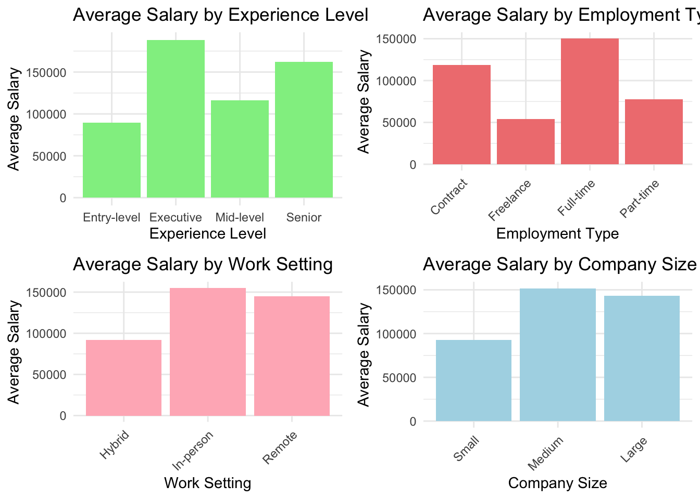
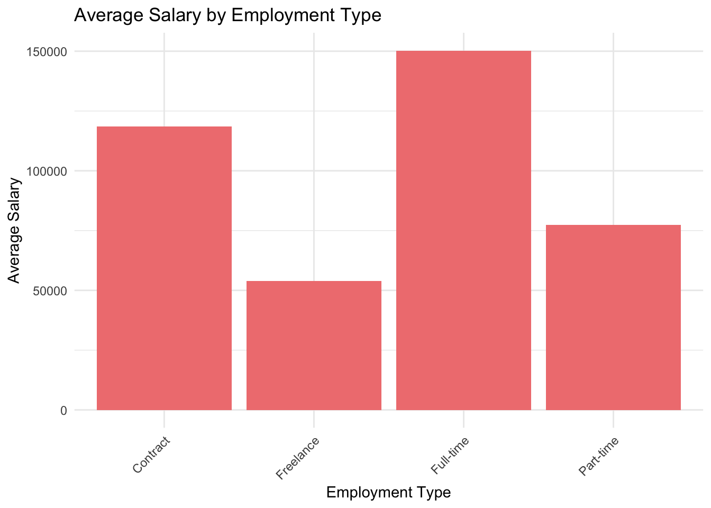
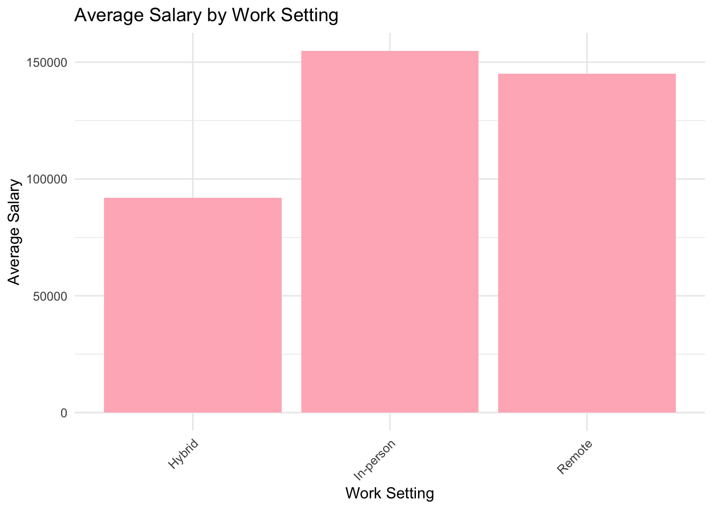
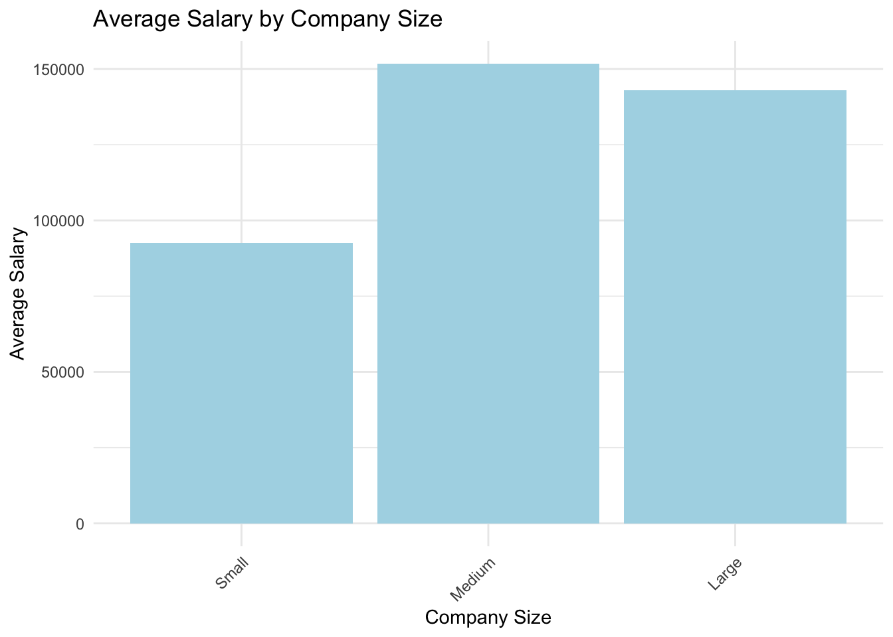
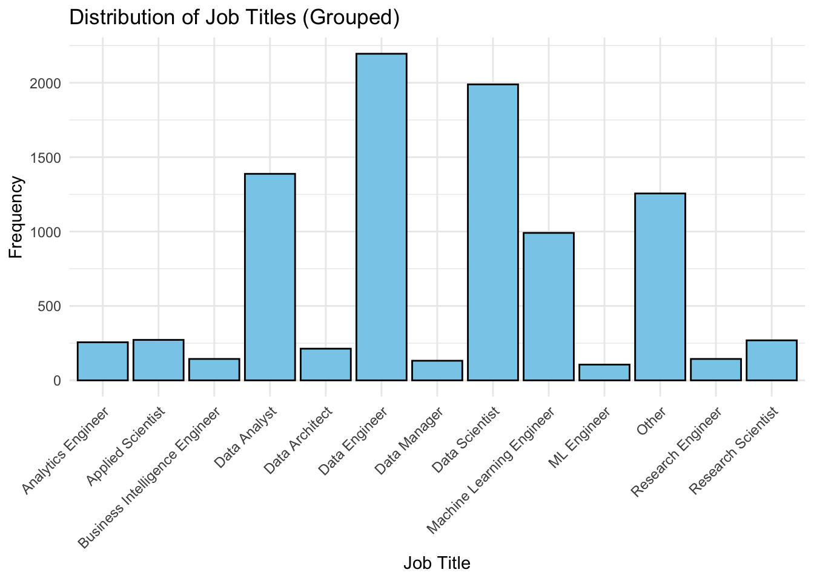
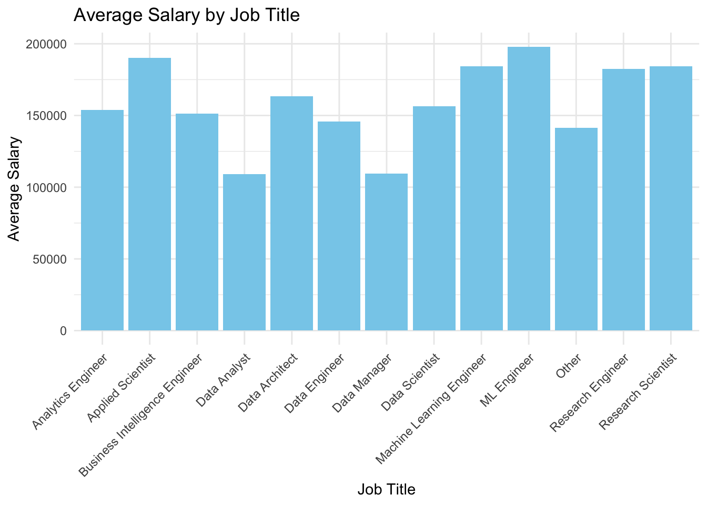
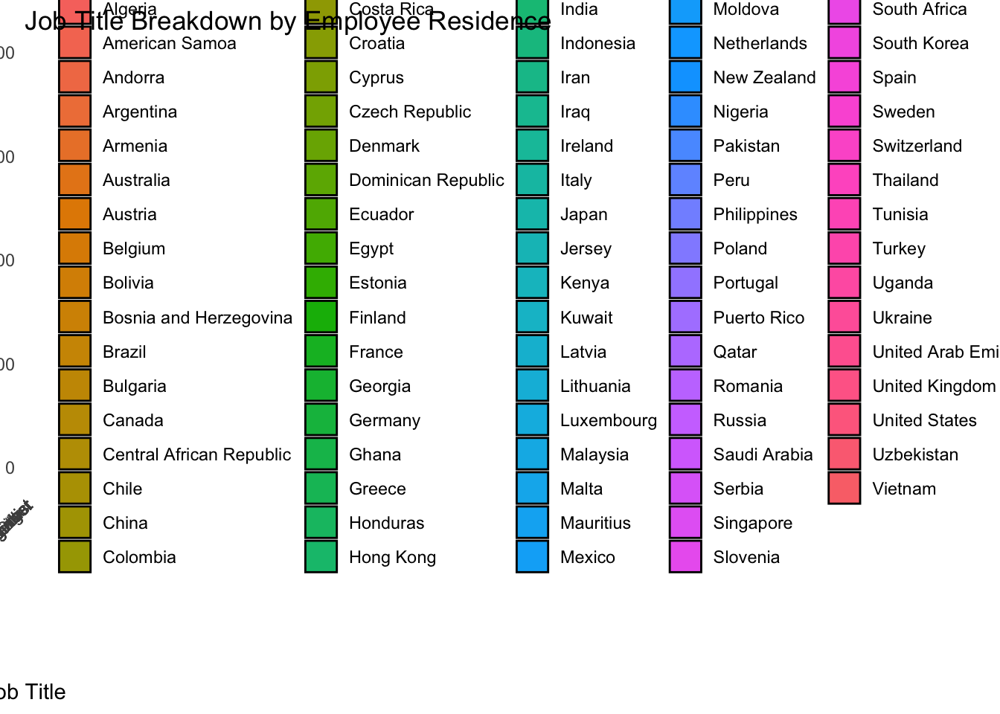
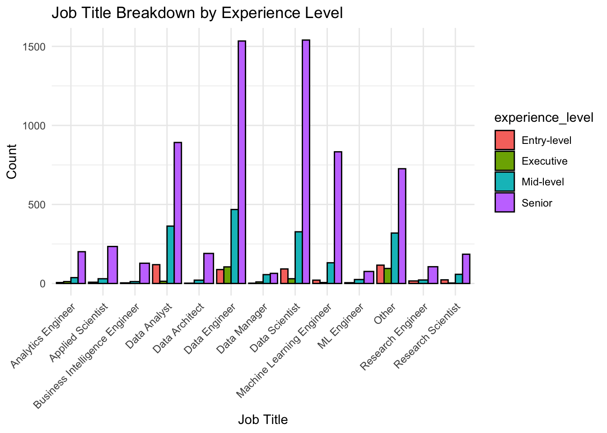
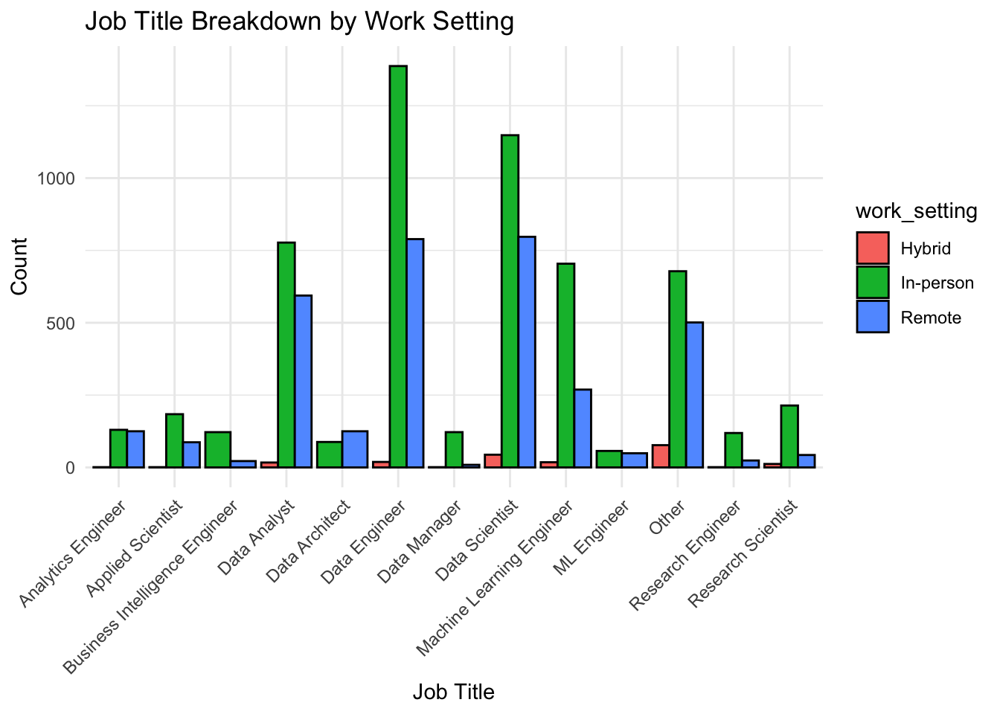
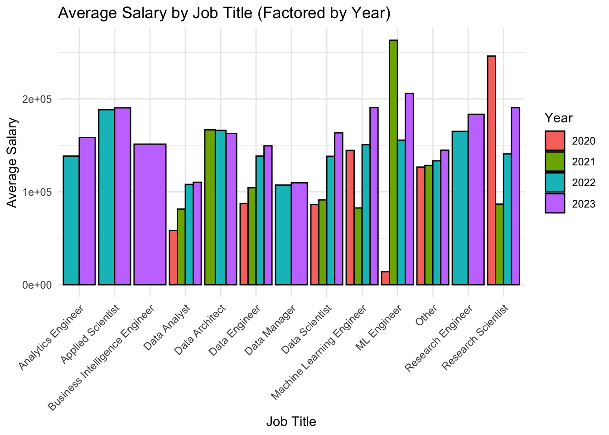

libs <- c('tidyverse','knitr','viridis', 'mosaic', 'Lahman', "readr", "dplyr", "tidyr", "ggplot2")
for(l in libs){
if(!require(l,character.only = TRUE, quietly = TRUE)){
message( sprintf('Did not have the required package << %s >> installed. Downloading now ... ',l))
install.packages(l)
}
library(l, character.only = TRUE, quietly = TRUE)
}Lab 3
data_science <- read_csv(file = "data/jobs_in_data.csv", show_col_types = FALSE)
dim(data_science)[1] 9355 12data_science$job_title <- as.factor(data_science$job_title)
data_science$experience_level <- as.factor(data_science$experience_level)
data_science$employment_type <- as.factor(data_science$employment_type)
data_science$work_setting <- as.factor(data_science$work_setting)
data_science$company_size <- as.factor(data_science$company_size)
model <- lm(salary ~ job_title + experience_level + employment_type + work_setting + company_size, data = data_science)
# Summarize the model
summary(model)
Call:
lm(formula = salary ~ job_title + experience_level + employment_type +
work_setting + company_size, data = data_science)
Residuals:
Min 1Q Median 3Q Max
-168172 -35547 -4480 29442 346253
Coefficients:
Estimate Std. Error t value
(Intercept) 159452 21343 7.471
job_titleAI Developer -68886 19915 -3.459
job_titleAI Engineer -63921 17779 -3.595
job_titleAI Programmer -118422 28466 -4.160
job_titleAI Research Engineer -130522 30818 -4.235
job_titleAI Scientist -81106 19957 -4.064
job_titleAnalytics Engineer -87465 15750 -5.553
job_titleAnalytics Engineering Manager 118403 55646 2.128
job_titleApplied Data Scientist -87930 22314 -3.941
job_titleApplied Machine Learning Engineer -77593 34465 -2.251
job_titleApplied Machine Learning Scientist -92927 21932 -4.237
job_titleApplied Scientist -47880 15752 -3.040
job_titleAutonomous Vehicle Technician -67025 41882 -1.600
job_titleAWS Data Architect 59246 55533 1.067
job_titleAzure Data Engineer -83581 40825 -2.047
job_titleBI Analyst -95138 18305 -5.197
job_titleBI Data Analyst -119281 20424 -5.840
job_titleBI Data Engineer -129334 55548 -2.328
job_titleBI Developer -118456 17082 -6.935
job_titleBig Data Architect -100424 40767 -2.463
job_titleBig Data Engineer -102550 24438 -4.196
job_titleBusiness Data Analyst -118087 20026 -5.897
job_titleBusiness Intelligence Analyst -109963 17023 -6.460
job_titleBusiness Intelligence Data Analyst -80218 40805 -1.966
job_titleBusiness Intelligence Developer -133117 20101 -6.622
job_titleBusiness Intelligence Engineer -91558 16039 -5.709
job_titleBusiness Intelligence Manager -72327 40743 -1.775
job_titleBusiness Intelligence Specialist -88074 30786 -2.861
job_titleCloud Data Architect 43403 55646 0.780
job_titleCloud Data Engineer -46790 30886 -1.515
job_titleCloud Database Engineer -87534 28383 -3.084
job_titleCompliance Data Analyst -135761 40841 -3.324
job_titleComputer Vision Engineer -52078 18758 -2.776
job_titleComputer Vision Software Engineer -86764 28579 -3.036
job_titleConsultant Data Engineer -83447 57237 -1.458
job_titleData Analyst -123459 15466 -7.983
job_titleData Analytics Consultant -66494 41696 -1.595
job_titleData Analytics Engineer -138241 28405 -4.867
job_titleData Analytics Lead -24402 34419 -0.709
job_titleData Analytics Manager -84105 17665 -4.761
job_titleData Analytics Specialist -155688 40711 -3.824
job_titleData Architect -79551 15822 -5.028
job_titleData Developer -118042 26674 -4.425
job_titleData DevOps Engineer -105818 40972 -2.583
job_titleData Engineer -92575 15435 -5.998
job_titleData Infrastructure Engineer -34859 21770 -1.601
job_titleData Integration Engineer -126249 40718 -3.101
job_titleData Integration Specialist -95304 22990 -4.146
job_titleData Lead -69556 21013 -3.310
job_titleData Management Analyst -133334 40808 -3.267
job_titleData Management Specialist -142755 28374 -5.031
job_titleData Manager -125302 16090 -7.788
job_titleData Modeler -116428 19134 -6.085
job_titleData Modeller -146266 40736 -3.591
job_titleData Operations Analyst -147829 22828 -6.476
job_titleData Operations Engineer -100191 20368 -4.919
job_titleData Operations Manager -108249 40718 -2.659
job_titleData Operations Specialist -173652 30784 -5.641
job_titleData Product Manager -98707 24338 -4.056
job_titleData Product Owner -141266 40736 -3.468
job_titleData Quality Analyst -148423 19476 -7.621
job_titleData Quality Engineer -122686 34440 -3.562
job_titleData Science Consultant -124682 17376 -7.175
job_titleData Science Director -72334 30962 -2.336
job_titleData Science Engineer -85243 20985 -4.062
job_titleData Science Lead -55236 19494 -2.833
job_titleData Science Manager -41361 16403 -2.522
job_titleData Science Practitioner -106208 22829 -4.652
job_titleData Science Tech Lead 168403 55646 3.026
job_titleData Scientist -81648 15440 -5.288
job_titleData Scientist Lead -68675 40794 -1.683
job_titleData Specialist -124962 17560 -7.116
job_titleData Strategist -145218 19872 -7.308
job_titleData Strategy Manager -105499 30786 -3.427
job_titleData Visualization Analyst -130688 40711 -3.210
job_titleData Visualization Engineer -127713 30778 -4.150
job_titleData Visualization Specialist -128413 30778 -4.172
job_titleDecision Scientist -79202 17658 -4.485
job_titleDeep Learning Engineer -25564 21777 -1.174
job_titleDeep Learning Researcher -127115 55512 -2.290
job_titleDirector of Data Science -39486 18510 -2.133
job_titleETL Developer -115538 19872 -5.814
job_titleETL Engineer -148577 40743 -3.647
job_titleFinance Data Analyst -78060 34756 -2.246
job_titleFinancial Data Analyst -88596 30878 -2.869
job_titleHead of Data -54492 18172 -2.999
job_titleHead of Data Science -76306 22464 -3.397
job_titleHead of Machine Learning -14334 40851 -0.351
job_titleInsight Analyst -172031 24374 -7.058
job_titleLead Data Analyst -104874 34476 -3.042
job_titleLead Data Engineer -68016 26850 -2.533
job_titleLead Data Scientist -93446 24431 -3.825
job_titleLead Machine Learning Engineer -144802 34446 -4.204
job_titleMachine Learning Developer -105120 24501 -4.290
job_titleMachine Learning Engineer -56780 15486 -3.667
job_titleMachine Learning Infrastructure Engineer -85465 18500 -4.620
job_titleMachine Learning Manager -75943 30802 -2.465
job_titleMachine Learning Modeler -77338 40711 -1.900
job_titleMachine Learning Operations Engineer -175676 55516 -3.164
job_titleMachine Learning Research Engineer -122864 30870 -3.980
job_titleMachine Learning Researcher -72914 20151 -3.618
job_titleMachine Learning Scientist -59485 16568 -3.590
job_titleMachine Learning Software Engineer -29623 21343 -1.388
job_titleMachine Learning Specialist -152327 40743 -3.739
job_titleManager Data Management -110676 55516 -1.994
job_titleManaging Director Data Science 41677 55618 0.749
job_titleMarketing Data Analyst -84858 40793 -2.080
job_titleMarketing Data Engineer -61682 55674 -1.108
job_titleML Engineer -36567 16247 -2.251
job_titleMLOps Engineer -83701 22278 -3.757
job_titleNLP Engineer -93296 21806 -4.278
job_titlePower BI Developer -138754 55533 -2.499
job_titlePrincipal Data Analyst -85684 40783 -2.101
job_titlePrincipal Data Engineer -84725 34416 -2.462
job_titlePrincipal Data Scientist -47378 22897 -2.069
job_titlePrincipal Machine Learning Engineer -44316 34478 -1.285
job_titleProduct Data Analyst -108702 28568 -3.805
job_titleResearch Analyst -134003 17616 -7.607
job_titleResearch Engineer -54289 16027 -3.387
job_titleResearch Scientist -50092 15735 -3.183
job_titleSales Data Analyst -161536 57226 -2.823
job_titleSoftware Data Engineer -77570 34940 -2.220
job_titleStaff Data Analyst -116636 34768 -3.355
job_titleStaff Data Scientist -99095 41383 -2.395
job_titleStaff Machine Learning Engineer -30170 55661 -0.542
experience_levelExecutive 77562 4474 17.335
experience_levelMid-level 17993 2845 6.325
experience_levelSenior 54915 2694 20.382
employment_typeFreelance -64661 22183 -2.915
employment_typeFull-time -7771 13987 -0.556
employment_typePart-time -5886 19672 -0.299
work_settingIn-person 35518 4465 7.954
work_settingRemote 29079 4470 6.505
company_sizeM 8573 2419 3.544
company_sizeS -26635 5006 -5.321
Pr(>|t|)
(Intercept) 8.68e-14 ***
job_titleAI Developer 0.000545 ***
job_titleAI Engineer 0.000326 ***
job_titleAI Programmer 3.21e-05 ***
job_titleAI Research Engineer 2.31e-05 ***
job_titleAI Scientist 4.86e-05 ***
job_titleAnalytics Engineer 2.88e-08 ***
job_titleAnalytics Engineering Manager 0.033383 *
job_titleApplied Data Scientist 8.19e-05 ***
job_titleApplied Machine Learning Engineer 0.024387 *
job_titleApplied Machine Learning Scientist 2.29e-05 ***
job_titleApplied Scientist 0.002376 **
job_titleAutonomous Vehicle Technician 0.109558
job_titleAWS Data Architect 0.286057
job_titleAzure Data Engineer 0.040656 *
job_titleBI Analyst 2.07e-07 ***
job_titleBI Data Analyst 5.39e-09 ***
job_titleBI Data Engineer 0.019916 *
job_titleBI Developer 4.35e-12 ***
job_titleBig Data Architect 0.013783 *
job_titleBig Data Engineer 2.74e-05 ***
job_titleBusiness Data Analyst 3.84e-09 ***
job_titleBusiness Intelligence Analyst 1.10e-10 ***
job_titleBusiness Intelligence Data Analyst 0.049340 *
job_titleBusiness Intelligence Developer 3.73e-11 ***
job_titleBusiness Intelligence Engineer 1.17e-08 ***
job_titleBusiness Intelligence Manager 0.075901 .
job_titleBusiness Intelligence Specialist 0.004235 **
job_titleCloud Data Architect 0.435426
job_titleCloud Data Engineer 0.129833
job_titleCloud Database Engineer 0.002048 **
job_titleCompliance Data Analyst 0.000890 ***
job_titleComputer Vision Engineer 0.005510 **
job_titleComputer Vision Software Engineer 0.002405 **
job_titleConsultant Data Engineer 0.144897
job_titleData Analyst 1.60e-15 ***
job_titleData Analytics Consultant 0.110800
job_titleData Analytics Engineer 1.15e-06 ***
job_titleData Analytics Lead 0.478357
job_titleData Analytics Manager 1.96e-06 ***
job_titleData Analytics Specialist 0.000132 ***
job_titleData Architect 5.05e-07 ***
job_titleData Developer 9.74e-06 ***
job_titleData DevOps Engineer 0.009819 **
job_titleData Engineer 2.08e-09 ***
job_titleData Infrastructure Engineer 0.109353
job_titleData Integration Engineer 0.001937 **
job_titleData Integration Specialist 3.42e-05 ***
job_titleData Lead 0.000936 ***
job_titleData Management Analyst 0.001090 **
job_titleData Management Specialist 4.97e-07 ***
job_titleData Manager 7.56e-15 ***
job_titleData Modeler 1.21e-09 ***
job_titleData Modeller 0.000332 ***
job_titleData Operations Analyst 9.92e-11 ***
job_titleData Operations Engineer 8.84e-07 ***
job_titleData Operations Manager 0.007862 **
job_titleData Operations Specialist 1.74e-08 ***
job_titleData Product Manager 5.04e-05 ***
job_titleData Product Owner 0.000527 ***
job_titleData Quality Analyst 2.77e-14 ***
job_titleData Quality Engineer 0.000369 ***
job_titleData Science Consultant 7.77e-13 ***
job_titleData Science Director 0.019499 *
job_titleData Science Engineer 4.90e-05 ***
job_titleData Science Lead 0.004615 **
job_titleData Science Manager 0.011699 *
job_titleData Science Practitioner 3.33e-06 ***
job_titleData Science Tech Lead 0.002483 **
job_titleData Scientist 1.26e-07 ***
job_titleData Scientist Lead 0.092322 .
job_titleData Specialist 1.19e-12 ***
job_titleData Strategist 2.94e-13 ***
job_titleData Strategy Manager 0.000613 ***
job_titleData Visualization Analyst 0.001331 **
job_titleData Visualization Engineer 3.36e-05 ***
job_titleData Visualization Specialist 3.04e-05 ***
job_titleDecision Scientist 7.37e-06 ***
job_titleDeep Learning Engineer 0.240482
job_titleDeep Learning Researcher 0.022053 *
job_titleDirector of Data Science 0.032928 *
job_titleETL Developer 6.30e-09 ***
job_titleETL Engineer 0.000267 ***
job_titleFinance Data Analyst 0.024731 *
job_titleFinancial Data Analyst 0.004125 **
job_titleHead of Data 0.002719 **
job_titleHead of Data Science 0.000685 ***
job_titleHead of Machine Learning 0.725671
job_titleInsight Analyst 1.81e-12 ***
job_titleLead Data Analyst 0.002357 **
job_titleLead Data Engineer 0.011320 *
job_titleLead Data Scientist 0.000132 ***
job_titleLead Machine Learning Engineer 2.65e-05 ***
job_titleMachine Learning Developer 1.80e-05 ***
job_titleMachine Learning Engineer 0.000247 ***
job_titleMachine Learning Infrastructure Engineer 3.89e-06 ***
job_titleMachine Learning Manager 0.013700 *
job_titleMachine Learning Modeler 0.057509 .
job_titleMachine Learning Operations Engineer 0.001559 **
job_titleMachine Learning Research Engineer 6.95e-05 ***
job_titleMachine Learning Researcher 0.000298 ***
job_titleMachine Learning Scientist 0.000332 ***
job_titleMachine Learning Software Engineer 0.165185
job_titleMachine Learning Specialist 0.000186 ***
job_titleManager Data Management 0.046227 *
job_titleManaging Director Data Science 0.453670
job_titleMarketing Data Analyst 0.037533 *
job_titleMarketing Data Engineer 0.267930
job_titleML Engineer 0.024425 *
job_titleMLOps Engineer 0.000173 ***
job_titleNLP Engineer 1.90e-05 ***
job_titlePower BI Developer 0.012486 *
job_titlePrincipal Data Analyst 0.035671 *
job_titlePrincipal Data Engineer 0.013843 *
job_titlePrincipal Data Scientist 0.038561 *
job_titlePrincipal Machine Learning Engineer 0.198696
job_titleProduct Data Analyst 0.000143 ***
job_titleResearch Analyst 3.08e-14 ***
job_titleResearch Engineer 0.000709 ***
job_titleResearch Scientist 0.001460 **
job_titleSales Data Analyst 0.004771 **
job_titleSoftware Data Engineer 0.026435 *
job_titleStaff Data Analyst 0.000798 ***
job_titleStaff Data Scientist 0.016660 *
job_titleStaff Machine Learning Engineer 0.587807
experience_levelExecutive < 2e-16 ***
experience_levelMid-level 2.65e-10 ***
experience_levelSenior < 2e-16 ***
employment_typeFreelance 0.003567 **
employment_typeFull-time 0.578535
employment_typePart-time 0.764772
work_settingIn-person 2.02e-15 ***
work_settingRemote 8.18e-11 ***
company_sizeM 0.000396 ***
company_sizeS 1.06e-07 ***
---
Signif. codes: 0 '***' 0.001 '**' 0.01 '*' 0.05 '.' 0.1 ' ' 1
Residual standard error: 53300 on 9220 degrees of freedom
Multiple R-squared: 0.308, Adjusted R-squared: 0.2979
F-statistic: 30.62 on 134 and 9220 DF, p-value: < 2.2e-16exp_salary <- data_science %>%
group_by(experience_level) %>%
summarize(avg_salary = mean(salary, na.rm = TRUE))
employment_salary <- data_science %>%
group_by(employment_type) %>%
summarize(avg_salary = mean(salary, na.rm = TRUE))
work_salary <- data_science %>%
group_by(work_setting) %>%
summarize(avg_salary = mean(salary, na.rm = TRUE))
company_salary <- data_science %>%
group_by(company_size) %>%
summarize(avg_salary = mean(salary, na.rm = TRUE))# experience level
ggplot(data = exp_salary, aes(x = experience_level, y = avg_salary)) +
geom_bar(stat = "identity", fill = "lightgreen") +
theme_minimal() +
labs(title = "Average Salary by Experience Level",
x = "Experience Level",
y = "Average Salary")
# employment type
ggplot(data = employment_salary, aes(x = employment_type, y = avg_salary)) +
geom_bar(stat = "identity", fill = "lightcoral") +
theme_minimal() +
labs(title = "Average Salary by Employment Type",
x = "Employment Type",
y = "Average Salary") +
theme(axis.text.x = element_text(angle = 45, hjust = 1))
# work setting
ggplot(data = work_salary, aes(x = work_setting, y = avg_salary, levels = c("Remote", "Hybrid", "In-Person"))) +
geom_bar(stat = "identity", fill = "lightpink") +
theme_minimal() +
labs(title = "Average Salary by Work Setting",
x = "Work Setting",
y = "Average Salary") +
theme(axis.text.x = element_text(angle = 45, hjust = 1))
scale_x_discrete(labels = c("Remote" = "Remote", "Hybrid" = "Hybrid", "In-Person" = "In-Person"))<ggproto object: Class ScaleDiscretePosition, ScaleDiscrete, Scale, gg>
aesthetics: x xmin xmax xend
axis_order: function
break_info: function
break_positions: function
breaks: waiver
call: call
clone: function
dimension: function
drop: TRUE
expand: waiver
get_breaks: function
get_breaks_minor: function
get_labels: function
get_limits: function
guide: waiver
is_discrete: function
is_empty: function
labels: Remote Hybrid In-Person
limits: NULL
make_sec_title: function
make_title: function
map: function
map_df: function
n.breaks.cache: NULL
na.translate: TRUE
na.value: NA
name: waiver
palette: function
palette.cache: NULL
position: bottom
range: environment
range_c: environment
rescale: function
reset: function
scale_name: position_d
train: function
train_df: function
transform: function
transform_df: function
super: <ggproto object: Class ScaleDiscretePosition, ScaleDiscrete, Scale, gg># company size
ggplot(data = company_salary, aes(x = factor(company_size, levels = c("S", "M", "L")), y = avg_salary)) +
geom_bar(stat = "identity", fill = "lightblue") +
theme_minimal() +
labs(title = "Average Salary by Company Size",
x = "Company Size",
y = "Average Salary") +
theme(axis.text.x = element_text(angle = 45, hjust = 1)) +
scale_x_discrete(labels = c("S" = "Small", "M" = "Medium", "L" = "Large"))
# gets ride of extra titles
job_title_counts <- data_science %>%
count(job_title)
other_jobs <- job_title_counts %>%
filter(n < 100) %>%
pull(job_title)
data_science_grouped <- data_science %>%
mutate(job_title_grouped = if_else(job_title %in% other_jobs, "Other", job_title))
#frequency of titles
ggplot(data = data_science_grouped, aes(x = job_title_grouped)) +
geom_bar(fill = "skyblue", color = "black") +
theme_minimal() +
labs(title = "Distribution of Job Titles (Grouped)",
x = "Job Title",
y = "Frequency") +
theme(axis.text.x = element_text(angle = 45, hjust = 1))
avg_salary_by_job <- data_science_grouped %>%
group_by(job_title_grouped) %>%
summarize(avg_salary = mean(salary, na.rm = TRUE))
ggplot(data = avg_salary_by_job, aes(x = job_title_grouped, y = avg_salary)) +
geom_bar(stat = "identity", fill = "skyblue") +
theme_minimal() +
labs(title = "Average Salary by Job Title",
x = "Job Title",
y = "Average Salary") +
theme(axis.text.x = element_text(angle = 45, hjust = 1))
data_science$job_title <- as.factor(data_science$job_title)
data_science$experience_level <- as.factor(data_science$experience_level)
data_science$employment_type <- as.factor(data_science$employment_type)
data_science$work_setting <- as.factor(data_science$work_setting)
data_science$company_size <- as.factor(data_science$company_size)
model <- lm(salary ~ experience_level + employment_type + work_setting + company_size, data = data_science)
# Summarize the model
summary(model)
Call:
lm(formula = salary ~ experience_level + employment_type + work_setting +
company_size, data = data_science)
Residuals:
Min 1Q Median 3Q Max
-178045 -39821 -6821 34339 330596
Coefficients:
Estimate Std. Error t value Pr(>|t|)
(Intercept) 78609 14281 5.504 3.80e-08 ***
experience_levelExecutive 94133 4416 21.315 < 2e-16 ***
experience_levelMid-level 21998 3013 7.301 3.08e-13 ***
experience_levelSenior 66910 2820 23.727 < 2e-16 ***
employment_typeFreelance -62647 22173 -2.825 0.00473 **
employment_typeFull-time -8202 13559 -0.605 0.54524
employment_typePart-time -9770 20293 -0.481 0.63020
work_settingIn-person 32231 4626 6.967 3.45e-12 ***
work_settingRemote 23104 4642 4.977 6.58e-07 ***
company_sizeM -3727 2332 -1.598 0.11011
company_sizeS -29022 5202 -5.579 2.49e-08 ***
---
Signif. codes: 0 '***' 0.001 '**' 0.01 '*' 0.05 '.' 0.1 ' ' 1
Residual standard error: 58450 on 9344 degrees of freedom
Multiple R-squared: 0.1567, Adjusted R-squared: 0.1558
F-statistic: 173.6 on 10 and 9344 DF, p-value: < 2.2e-16Q2
# Plotting the breakdown of job titles by employee residence
ggplot(data = data_science_grouped, aes(x = job_title_grouped, fill = employee_residence)) +
geom_bar(position = "dodge", color = "black") +
theme_minimal() +
labs(title = "Job Title Breakdown by Employee Residence",
x = "Job Title",
y = "Count") +
theme(axis.text.x = element_text(angle = 45, hjust = 1))
# Plotting the breakdown of job titles by experience level
ggplot(data = data_science_grouped, aes(x = job_title_grouped, fill = experience_level)) +
geom_bar(position = "dodge", color = "black") +
theme_minimal() +
labs(title = "Job Title Breakdown by Experience Level",
x = "Job Title",
y = "Count") +
theme(axis.text.x = element_text(angle = 45, hjust = 1))
# Plotting the breakdown of job titles by work setting
ggplot(data = data_science_grouped, aes(x = job_title_grouped, fill = work_setting)) +
geom_bar(position = "dodge", color = "black") +
theme_minimal() +
labs(title = "Job Title Breakdown by Work Setting",
x = "Job Title",
y = "Count") +
theme(axis.text.x = element_text(angle = 45, hjust = 1))
Q3
# Calculate the average salary for each job title and year
avg_salary_by_job_year <- data_science_grouped %>%
group_by(job_title_grouped, work_year) %>%
summarize(avg_salary = mean(salary, na.rm = TRUE))
# Plotting the average salary for each job title by year
ggplot(data = avg_salary_by_job_year, aes(x = job_title_grouped, y = avg_salary, fill = factor(work_year))) +
geom_bar(stat = "identity", position = position_dodge(), color = "black") +
theme_minimal() +
labs(title = "Average Salary by Job Title (Factored by Year)",
x = "Job Title",
y = "Average Salary",
fill = "Year") +
theme(axis.text.x = element_text(angle = 45, hjust = 1))